Tips for training: Adaptive Learning Rate¶
critical point其实不一定是训练Network时候会遇到的最大障碍，今天要告诉大家的是一个叫做Adaptive Learning Rate的技术，我们要给每一个参数不同的learning rate
Training stuck ≠ Small Gradient¶
People believe training stuck because the parameters are around a critical point …¶
为什么我说这个critical point不一定是我们训练过程中，最大的阻碍呢？
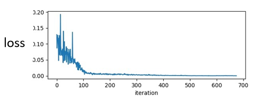
往往同学们，在训练一个network的时候，你会把它的loss记录下来，所以你会看到，你的loss原来很大，随着你参数不断的update，横轴代表参数update的次数，随着你参数不断的update，这个loss会越来越小，最后就卡住了，你的loss不再下降
那多数这个时候，大家就会猜说，那是不是走到了critical point，因为gradient等于零的关系，所以我们没有办法再更新参数，但是真的是这样吗
当我们说走到critical point的时候，意味着gradient非常的小，但是你有确认过，当你的loss不再下降的时候，gradient真的很小吗？其实多数的同学可能，都没有确认过这件事，而事实上在这个例子里面，在今天我show的这个例子里面，当我们的loss不再下降的时候，gradient并没有真的变得很小
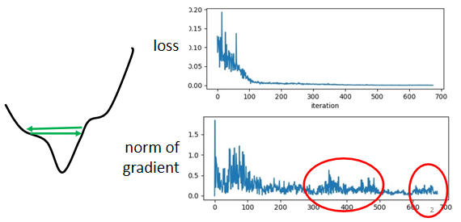
gradient是一个向量，下面是gradient的norm，即gradient这个向量的长度，随着参数更新的时候的变化，你会发现说虽然loss不再下降，但是这个gradient的norm，gradient的大小并没有真的变得很小
这样子的结果其实也不难猜想，也许你遇到的是这样子的状况
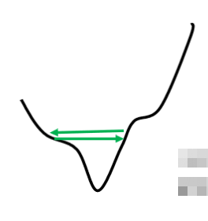
这个是我们的error surface，然后你现在的gradient，在error surface山谷的两个谷壁间，不断的来回的震荡
这个时候你的loss不会再下降，所以你会觉得它真的卡到了critical point，卡到了saddle point，卡到了local minima吗？不是的，它的gradient仍然很大，只是loss不见得再减小了
所以你要注意，当你今天训练一个network，train到后来发现，loss不再下降的时候，你不要随便说，我卡在local minima，我卡在saddle point，有时候根本两个都不是，你只是单纯的loss没有办法再下降
就是为什么你在在作业2-2，会有一个作业叫大家，算一下gradient的norm，然后算一下说，你现在是卡在saddle point，还是critical point，因为多数的时候，当你说你训练卡住了，很少有人会去分析卡住的原因，为了强化你的印象，我们有一个作业，让你来分析一下，卡住的原因是什么，
Wait a minute¶
有的同学就会有一个问题，如果我们在训练的时候，其实很少卡到saddle point，或者是local minima，那这一个图是怎么做出来的呢?
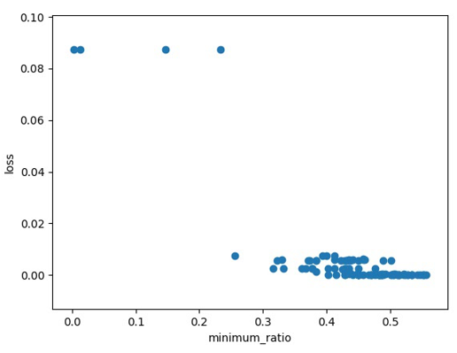
我们上次有画过这个图是说我们现在训练一个Network，训练到现在参数在critical point附近，然后我们再来根据eigen value的正负号，来判断说这个critical point，比较像是saddle point，还是local minima
那如果实际上在训练的时候，要走到saddle point，或者是local minima，是一件困难的事情，那这个图到底是怎么画出来的
那这边告诉大家一个秘密，这个图你要训练出这样子的结果，你要训练到你的参数很接近critical point，用一般的gradient descend，其实是做不到的，用一般的gradient descend train，你往往会得到的结果是，你在这个gradient还很大的时候，你的loss就已经掉了下去，这个是需要特别方法train的
所以做完这个实验以后，我更感觉你要走到一个critical point，其实是困难的一件事，多数时候training，在还没有走到critical point的时候，就已经停止了，那这并不代表说，critical point不是一个问题，我只是想要告诉你说，我们真正目前，当你用gradient descend，来做optimization的时候，你真正应该要怪罪的对象，往往不是critical point，而是其他的原因，
Training can be difficult even without critical points¶
如果今天critical point不是问题的话，为什么我们的training会卡住呢，我这边举一个非常简单的例子，我这边有一个，非常简单的error surface
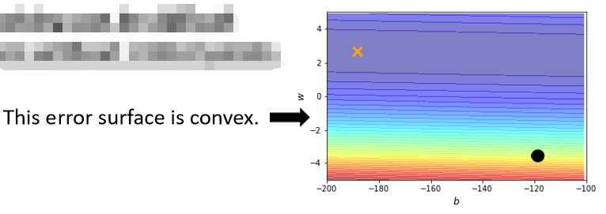
我们只有两个参数，这两个参数值不一样的时候，Loss的值不一样，我们就画出了一个error surface，这个error surface的最低点在 黄色X 这个地方，事实上，这个error surface是convex的形状(可以理解为凸的或者凹的，convex optimization常翻译为“凸优化”)
如果你不知道convex是什么，没有关系，总之它是一个，它的这个等高线是椭圆形的，只是它在横轴的地方，它的gradient非常的小，它的坡度的变化非常的小，非常的平滑，所以这个椭圆的长轴非常的长，短轴相对之下比较短，在纵轴的地方gradient的变化很大，error surface的坡度非常的陡峭
那现在我们要从黑点这个地方，这个地方当作初始的点，然后来做gradient descend
你可能觉得说，这个convex的error surface，做gradient descend，有什么难的吗？不就是一路滑下来，然后可能再走过去吗，应该是非常容易。你实际上自己试一下，你会发现说，就连这种convex的error surface，形状这么简单的error surface，你用gradient descend，都不见得能把它做好，举例来说这个是我实际上，自己试了一下的结果
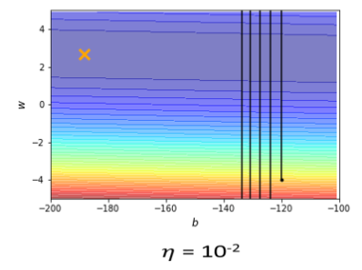
我learning rate设10⁻²的时候，我的这个参数在峡谷的两端，我的参数在山壁的两端不断的震荡，我的loss掉不下去，但是gradient其实仍然是很大的
那你可能说，就是因为你learning rate设太大了阿，learning rate决定了我们update参数的时候步伐有多大，learning rate显然步伐太大，你没有办法慢慢地滑到山谷里面只要把learning rate设小一点，不就可以解决这个问题了吗？
事实不然，因为我试著去，调整了这个learning rate，就会发现你光是要train这种convex的optimization的问题，你就觉得很痛苦，我就调这个learning rate，从10⁻²，一直调到10⁻⁷，调到10⁻⁷以后，终于不再震荡了
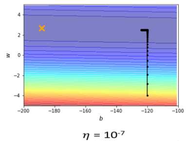
终于从这个地方滑滑滑，滑到山谷底终于左转，但是你发现说，这个训练永远走不到终点，因为我的learning rate已经太小了，竖直往上这一段这个很斜的地方，因为这个坡度很陡，gradient的值很大，所以还能够前进一点，左拐以后这个地方坡度已经非常的平滑了，这么小的learning rate，根本没有办法再让我们的训练前进
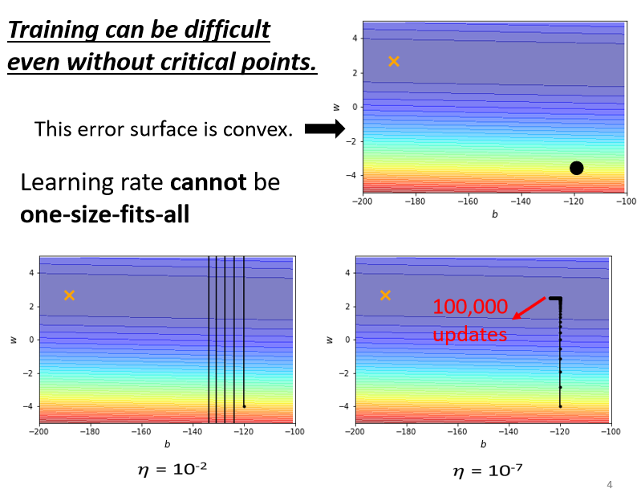
事实上在左拐这个地方，看到这边一大堆黑点，这边有十万个点，这个是张辽八百冲十万的那个十万，但是我都没有办法靠近，这个local minima的地方，所以显然就算是一个convex的error surface，你用gradient descend也很难train
这个convex的optimization的问题，确实有别的方法可以解，但是你想想看，如果今天是更复杂的error surface，你真的要train一个deep network的时候，gradient descend是你唯一可以仰赖的工具，但是gradient descend这个工具连这么简单的error surface都做不好，那如果难的问题，它又怎么有可能做好呢
所以我们需要更好的gradient descend的版本，在 之前我们的gradient descend里面，所有的参数都是设同样的learning rate，这显然是不够的，learning rate它应该要为，每一个参数客制化 ，所以接下来我们就是要讲，客制化的learning rate，怎么做到这件事情
Different parameters needs different learning rate¶
那我们要怎么客制化learning rate呢，我们不同的参数到底，需要什么样的learning rate呢
从刚才的例子里面，其实我们可以看到一个大原则，如果在某一个方向上，我们的gradient的值很小，非常的平坦，那我们会希望learning rate调大一点，如果在某一个方向上非常的陡峭，坡度很大，那我们其实期待，learning rate可以设得小一点
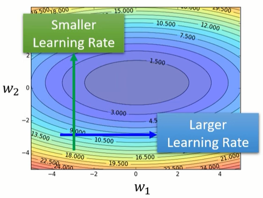
那这个learning rate要如何自动的，根据这个gradient的大小做调整呢
我们要改一下，gradient descend原来的式子，我们只放某一个参数update的式子，我们之前在讲gradient descend，我们往往是讲，所有参数update的式子，那这边为了等一下简化这个问题，我们只看一个参数，但是你完全可以把这个方法，推广到所有参数的状况
我们只看一个参数，这个参数叫做\({θ{_i}{^{t+1}}}\)，这个\({θ{_i}{^{t+1}}}\)是在第t个iteration的值减掉在第t个iteration这个参数i算出来的gradient \({g{_i}{^{t}}}\)
这个\({g{_i}{^{t}}}\)代表在第t个iteration，也就是θ等于θᵗ的时候，参数θᵢ对loss的微分，我们把这个θᵢᵗ减掉learning rate，乘上gᵢᵗ会更新learning rate到θᵢᵗ⁺¹，这是我们原来的gradient descend，我们的learning rate是固定的
现在我们要有一个随着参数客制化的learning rate，我们把原来learning rate \(η\)这一项呢，改写成\(\frac{η}{σᵢᵗ}\)
这个\(σ_i^t\)你发现它有一个上标t，有一个下标i，这代表说这个σ这个参数，首先它是取决于 i 的，不同的参数我们要给它不同的σ，同时它也是iteration dependent的，不同的iteration我们也会有不同的σ
所以当我们把我们的learning rate，从η改成\(\frac{η}{σᵢᵗ}\)的时候，我们就有一个，parameter dependent的learning rate，接下来我们是要看说，这个parameter dependent的learning rate有什么常见的计算方式
Root mean square¶
那这个σ有什么样的方式，可以把它计算出来呢，一个常见的类型是算，gradient的Root Mean Square
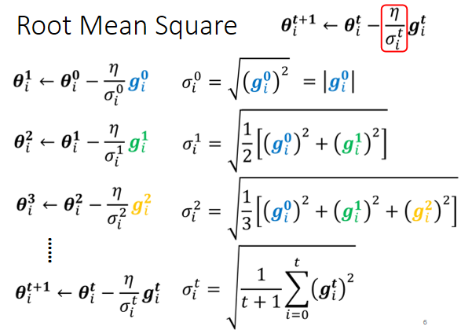
现在参数要update的式子，我们从θᵢ⁰初始化参数减掉gᵢ⁰，乘上learning rate η除以σᵢ⁰，就得到θᵢ¹，
-
这个σᵢ⁰在第一次update参数的时候，这个σᵢ⁰是(gᵢ⁰)²开根号
\[ {σᵢ^0}=\sqrt{({g{_i}{^{0}}})^2}=|{g{_i}{^{0}}}| \]这个gᵢ⁰就是我们的gradient，就是gradient的平方开根号，其实就是gᵢ⁰的绝对值，所以你把gᵢ⁰的绝对值代到\({θ{_i}{^{1}}} ← {θ{_i}{^{0}}}-{\frac{η}{σᵢ^0}}{g{_i}{^{0}}}\)，这个式子中gᵢ⁰跟这个根号底下的gᵢ⁰，它们的大小是一样的，所以式子中这一项只会有一个，要嘛是正一 要嘛是负一，就代表说我们第一次在update参数，从θᵢ⁰update到θᵢ¹的时候，要嘛是加上η 要嘛是减掉η，跟这个gradient的大小没有关系，是看你η设多少，这个是第一步的状况
-
重点是接下来怎么处理，那θᵢ¹它要一样，减掉gradient gᵢ¹乘上η除以σᵢ¹，
\[ {θ{_i}{^{1}}}-{\frac{η}{σᵢ^1}}{g{_i}{^{1}}} \]现在在第二次update参数的时候，是要除以σᵢ¹ ，这个σᵢ¹就是我们过去，所有计算出来的gradient，它的平方的平均再开根号
\[ {σᵢ^1}=\sqrt{\frac{1}{2}[{(g{_i}{^{0}}})^2+{(g{_i}{^{1}}})^2]} \]我们到目前为止，在第一次update参数的时候，我们算出了gᵢ⁰，在第二次update参数的时候，我们算出了gᵢ¹，所以这个σᵢ¹就是(gᵢ⁰)²，加上(gᵢ¹)²除以2再开根号，这个就是Root Mean Square，我们算出这个σᵢ¹以后，我们的learning rate就是η除以σᵢ¹，然后把θᵢ¹减掉，η除以σᵢ¹乘以gᵢ¹ 得到θᵢ²
\[ {θ{_i}{^{2}}} ← {θ{_i}{^{1}}}-{\frac{η}{σᵢ^1}}{g{_i}{^{1}}} \] -
同样的操作就反复继续下去，在θᵢ²的地方，你要减掉η除以σᵢ²乘以gᵢ²，
\[ {θ{_i}{^{2}}}-{\frac{η}{σᵢ^2}}{g{_i}{^{2}}} \]那这个σ是什么呢，这个σᵢ²就是过去，所有算出来的gradient，它的平方和的平均再开根号
\[ {σᵢ^2}=\sqrt{\frac{1}{3}[{(g{_i}{^{0}}})^2+{(g{_i}{^{1}}})^2+{(g{_i}{^{2}}})^2]} \]所以你把gᵢ⁰取平方，gᵢ¹取平方 gᵢ²取平方，的平均再开根号，得到σᵢ²放在这个地方，然后update参数
\[ {θ{_i}{^{3}}} ← {θ{_i}{^{2}}}-{\frac{η}{σᵢ^2}}{g{_i}{^{2}}} \] -
所以这个process这个过程，就反复继续下去，到第t + 1次update参数的时候，你的这个σᵢᵗ它就是过去所有的gradient，gᵢᵗ从第一步到目前为止，所有算出来的gᵢᵗ的平方和，再平均 再开根号得到σᵢᵗ，
\[ {σᵢ^t}=\sqrt{\frac{1}{t+1}\sum_{i=0}^{t}{(g{_i}{^{t}}})^2} \]然后在把它除learning rate，然后用这一项当作是，新的learning rate来update你的参数，
\[ {θ{_i}{^{t+1}}} ← {θ{_i}{^{t}}}-{\frac{η}{σᵢ^t}}{g{_i}{^{t}}} \]
Adagrad¶
那这一招被用在一个叫做 Adagrad 的方法里面，为什么这一招可以做到我们刚才讲的，坡度比较大的时候，learning rate就减小，坡度比较小的时候，learning rate就放大呢？
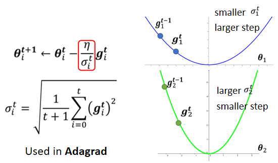
你可以想象说，现在我们有两个参数:一个叫θᵢ¹，一个叫θᵢ² ，θᵢ¹坡度小，θᵢ²坡度大
- θᵢ¹因为它坡度小，所以你在θᵢ¹这个参数上面，算出来的gradient值都比较小
- 因为gradient算出来的值比较小，然后这个σ是gradient的平方和取平均再开根号
-
所以算出来的σ就小，σ小 learning rate就大
\[ {\frac{η}{σᵢ^t}} \]
反过来说θᵢ²，θᵢ²是一个比较陡峭的参数，在θᵢ²这个方向上loss的变化比较大，所以算出来的gradient都比较大，，你的σ就比较大，你在update的时候 你的step，你的参数update的量就比较小
所以有了σ这一项以后，你就可以随着gradient的不同，每一个参数的gradient的不同，来自动的调整learning rate的大小，那这个并不是，你今天会用的最终极的版本，
RMSProp¶
刚才那个版本，就算是同一个参数，它需要的learning rate，也会随着时间而改变，我们刚才的假设，好像是同一个参数，它的gradient的大小，就会固定是差不多的值，但事实上并不一定是这个样子的
举例来说我们来看，这个新月形的error surface
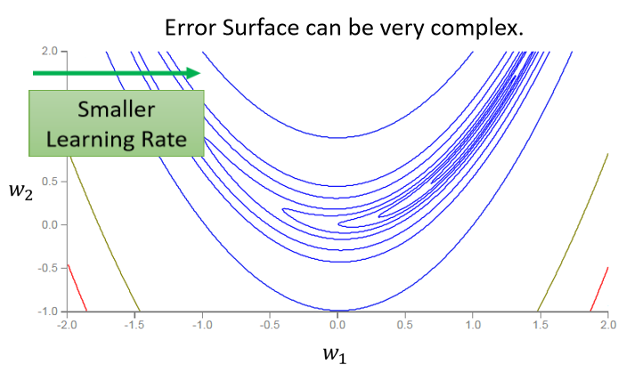
如果我们考虑横轴的话，考虑左右横的水平线的方向的话，你会发现说，在绿色箭头这个地方坡度比较陡峭，所以我们需要比较小的learning rate，
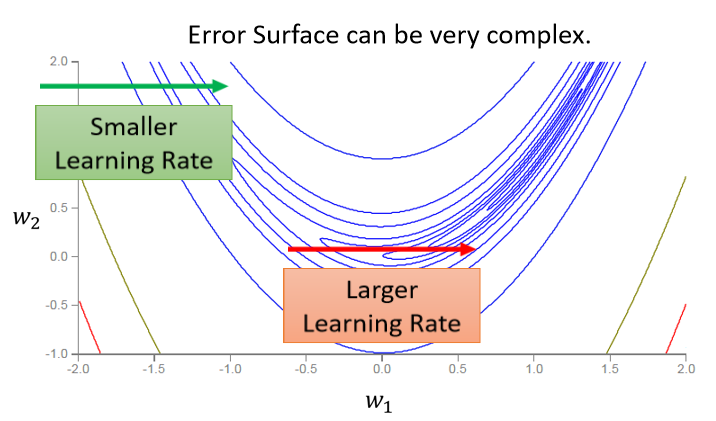
但是走到了中间这一段，到了红色箭头的时候呢，坡度又变得平滑了起来，平滑了起来就需要比较大的learning rate，所以就算是同一个参数同一个方向，我们也期待说，learning rate是可以动态的调整的，于是就有了一个新的招数，这个招数叫做 RMS Prop
RMS Prop这个方法有点传奇，它传奇的地方在于它找不到论文，非常多年前应该是将近十年前，Hinton在Coursera上，开过deep learning的课程，那个时候他在他的课程里面，讲了RMS Prop这个方法，然后这个方法没有论文，所以你要cite的话，你要cite那个影片的连结，这是个传奇的方法叫做RMS Prop
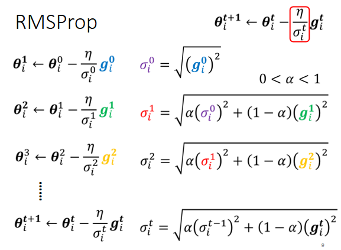
RMS Prop这个方法，它的第一步跟刚才讲的Root Mean Square，也就是那个Apagrad的方法，是一模一样的
我们看第二步，一样要算出σᵢ¹，只是我们现在算出σᵢ¹的方法跟刚才，算Root Mean Square的时候不一样，刚才在算Root Mean Square的时候，每一个gradient都有同等的重要性，但在RMS Prop里面，它决定你可以自己调整，现在的这个gradient，你觉得它有多重要
以在RMS Prop里面，我们这个σᵢ¹它是前一步算出来的σᵢ⁰，里面就是有gᵢ⁰，所以这个σᵢ⁰就代表了gᵢ⁰的大小，所以它是(σᵢ⁰)²，乘上α加上(1-α)，乘上现在我们刚算出来的，新鲜热腾腾的gradient就是gᵢ¹
那这个α就像learning rate一样，这个你要自己调它，它是一个hyperparameter
- 如果我今天α设很小趋近于0，就代表我觉得gᵢ¹相较于之前所算出来的gradient而言，比较重要
- 我α设很大趋近于1，那就代表我觉得现在算出来的gᵢ¹比较不重要，之前算出来的gradient比较重要
所以同理在第三次update参数的时候，我们要算σᵢ² ，我们就把σᵢ¹拿出来取平方再乘上α，那σᵢ¹里面有gᵢ¹跟σᵢ⁰ ，σᵢ⁰里面又有gᵢ⁰，所以你知道σᵢ¹里面它有gᵢ¹有gᵢ⁰， 然后这个gᵢ¹跟gᵢ⁰呢他们会被乘上α，然后再加上1-α乘上这个(gᵢ²)²
所以这个α就会决定说gᵢ²，它在整个σᵢ²里面佔有多大的影响力
那同样的过程就反覆继续下去，σᵢᵗ等于根号α乘上(σᵢᵗ⁻¹)²，加上(1-α) (gᵢᵗ)²，
你用α来决定现在刚算出来的gᵢᵗ，它有多重要，好那这个就是RMSProp
那RMSProp我们刚刚讲过说，透过α这一项你可以决定说，gᵢᵗ相较于之前存在，σᵢᵗ⁻¹里面的gᵢᵗ到gᵢᵗ⁻¹而言，它的重要性有多大，如果你用RMS Prop的话，你就可以动态调整σ这一项，我们现在假设从这个地方开始
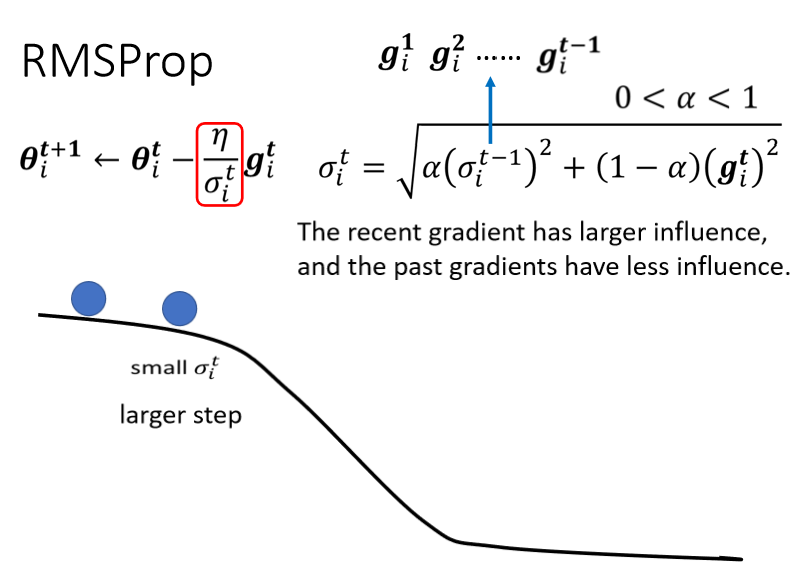
这个黑线是我们的error surface，从这个地方开始你要update参数，好你这个球就从这边走到这边，那因为一路上都很平坦，很平坦就代表说g算出来很小，代表现在update参数的时候，我们会走比较大的步伐
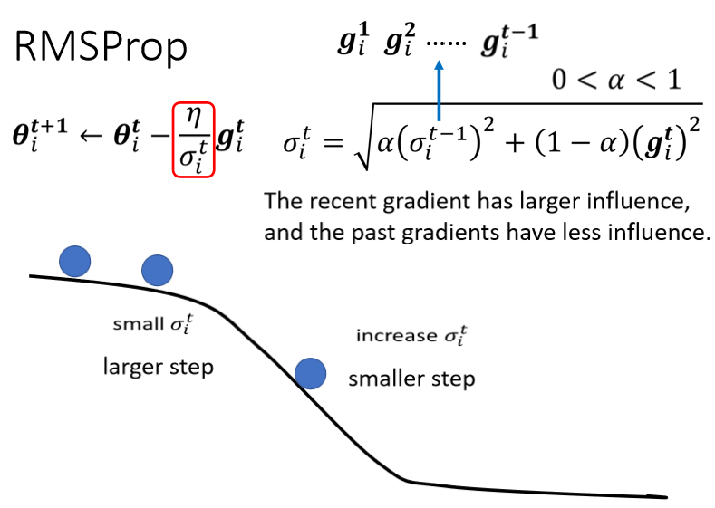
接下来继续滚，滚到这边以后我们gradient变大了，如果不是RMS Prop，原来的Adagrad的话它反应比较慢，但如果你用RMS Prop，然后呢你把α设小一点，你就是让新的，刚看到的gradient影响比较大的话，那你就可以很快的让σ的值变大，也可以很快的让你的步伐变小
你就可以踩一个刹车，本来很平滑走到这个地方，突然变得很陡，那RMS Prop可以很快的踩一个刹车，把learning rate变小，如果你没有踩刹车的话，你走到这里这个地方，learning rate太大了，那gradient又很大，两个很大的东西乘起来，你可能就很快就飞出去了，飞到很远的地方
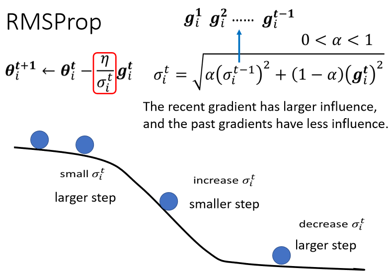
如果继续走，又走到平滑的地方了，因为这个σᵢᵗ 你可以调整α，让它比较看重于，最近算出来的gradient，所以你gradient一变小，σ可能就反应很快，它的这个值就变小了，然后呢你走的步伐就变大了，这个就是RMS Prop，
Adam¶
那今天你最常用的，optimization的策略，有人又叫做optimizer，今天最常用的optimization的策略，就是Adam
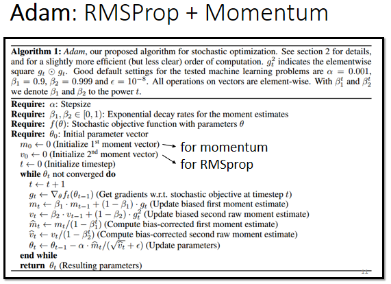
Adam就是RMS Prop加上Momentum，那Adam的演算法跟原始的论文https://arxiv.org/pdf/1412.6980.pdf
今天pytorch里面，都帮你写得好好的了，所以这个你今天，不用担心这种optimization的问题，optimizer这个deep learning的套件，往往都帮你做好了，然后这个optimizer里面，也有一些参数需要调，也有一些hyperparameter，需要人工决定，但是你往往用预设的，那一种参数就够好了，你自己调有时候会调到比较差的，往往你直接copy，这个pytorch里面，Adam这个optimizer，然后预设的参数不要随便调，就可以得到不错的结果了，关于Adam的细节，就留给大家自己研究
Learning Rate Scheduling¶
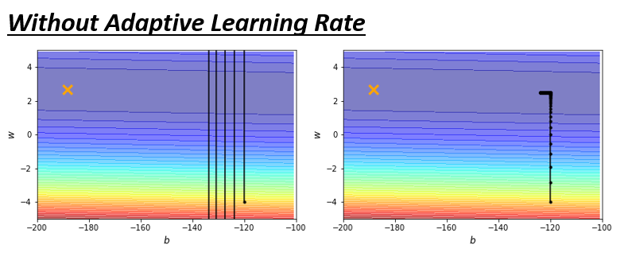
我们刚才讲说这个简单的error surface，我们都train不起来，现在我们来看一下，加上Adaptive Learning Rate以后，train不train得起来，
那这边是采用，最原始的Adagrad那个做法啦，就是把过去看过的，这个learning rate通通都，过去看过的gradient，通通都取平方再平均再开根号当作这个σ ，做起来是这个样子的
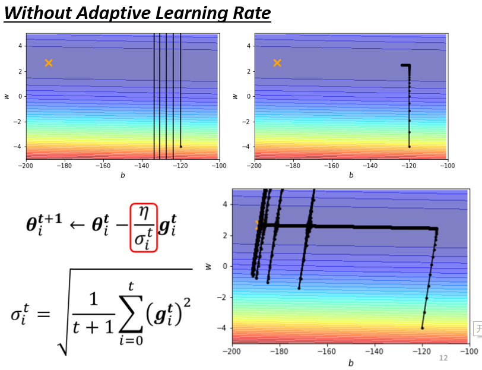
这个走下来没有问题，然后接下来在左转的时候，这边也是update了十万次，之前update了十万次，只卡在左转这个地方
那现在有Adagrad以后，你可以再继续走下去，走到非常接近终点的位置，因为当你走到这个地方的时候，你因为这个左右的方向的，这个gradient很小，所以learning rate会自动调整，左右这个方向的，learning rate会自动变大，所以你这个步伐就可以变大，就可以不断的前进
接下来的问题就是，为什么快走到终点的时候突然爆炸了呢
你想想看 我们在做这个σ的时候，我们是把过去所有看到的gradient，都拿来作平均
- 所以这个纵轴的方向，在这个初始的这个地方，感觉gradient很大
-
可是这边走了很长一段路以后，这个纵轴的方向，gradient算出来都很小，所以纵轴这个方向，这个y轴的方向就累积了很小的σ
-
因为我们在这个y轴的方向，看到很多很小的gradient，所以我们就累积了很小的σ，累积到一个地步以后，这个step就变很大，然后就爆走就喷出去了
-
喷出去以后没关系，有办法修正回来，因为喷出去以后，就走到了这个gradient比较大的地方，走到gradient比较大的地方以后，这个σ又慢慢的变大，σ慢慢变大以后，这个参数update的距离，Update的步伐大小就慢慢的变小
你就发现说走着走着，突然往左右喷了一下，但是这个喷了一下不会永远就是震荡，不会做简谐运动停不下来，这个力道慢慢变小，有摩擦力 让它慢慢地慢慢地，又回到中间这个峡谷来，然后但是又累计一段时间以后 又会喷，然后又慢慢地回来 怎么办呢，有一个方法也许可以解决这个问题，这个叫做learning rate的scheduling
什么是learning rate的scheduling呢
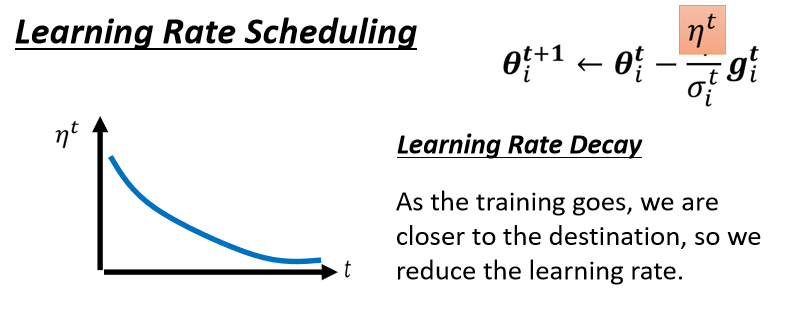
我们刚才这边还有一项η，这个η是一个固定的值，learning rate scheduling的意思就是说，我们不要把η当一个常数，我们把它跟时间有关
最常见的策略叫做 Learning Rate Decay ，也就是说，随着时间的不断地进行，随着参数不断的update，我们这个η让它越来越小
那这个也就合理了，因为一开始我们距离终点很远，随着参数不断update，我们距离终点越来越近，所以我们把learning rate减小，让我们参数的更新踩了一个刹车，让我们参数的更新能够慢慢地慢下来，所以刚才那个状况，如果加上Learning Rate Decay有办法解决
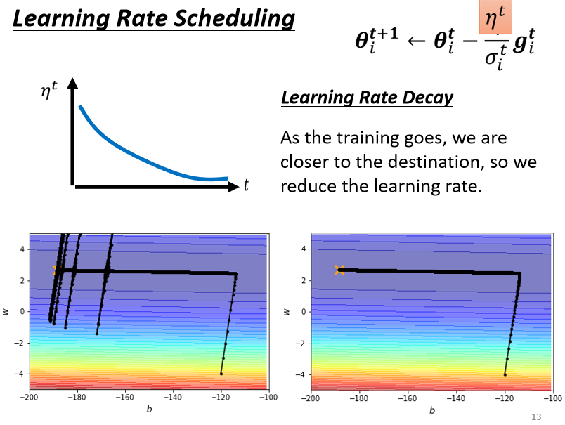
刚才那个状况，如果加上Learning Rate Decay的话，我们就可以很平顺的走到终点，因为在这个地方，这个η已经变得非常的小了，虽然说它本来想要左右乱喷，但是因为乘上这个非常小的η，就停下来了 就可以慢慢地走到终点，那除了Learning Rate Decay以外，还有另外一个经典，常用的Learning Rate Scheduling的方式，叫做 Warm Up
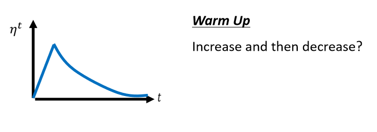
Warm Up这个方法，听起来有点匪夷所思，这Warm Up的方法是让learning rate，要先变大后变小，你会问说 变大要变到多大呢，变大速度要多快呢 ，小速度要多快呢，这个也是hyperparameter，你要自己用手调的，但是大方向的大策略就是，learning rate要先变大后变小，那这个方法听起来很神奇，就是一个黑科技这样，这个黑科技出现在，很多远古时代的论文里面
这个warm up，最近因为在训练BERT的时候，往往需要用到Warm Up，所以又被大家常常拿出来讲，但它并不是有BERT以后，才有Warm Up的，Warm Up这东西远古时代就有了，举例来说，Residual Network里面是有Warm Up的
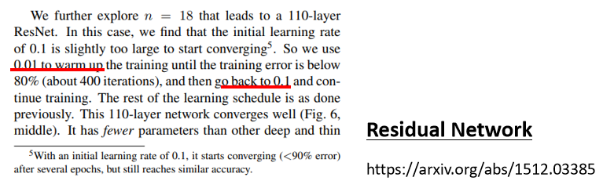
这边是放了Residual network，五六年前的文章，在deep learning变化，这么快速的领域里面，五六年前就是上古时代，那在上古时代，这个Residual Network里面，就已经记载了Warm Up的这件事情，它说我们用learning rate 0.01，取Warm Up，先用learning rate 0.01，再把learning rate改成0.1
用过去我们通常最常见的train，Learning Rate Scheduling的方法，就是让learning rate越来越小，但是Residual Network，这边特别注明它反其道而行，一开始要设0.01 接下来设0.1，还特别加一个注解说，一开始就用0.1反而就train不好，不知道为什么 也没解释，反正就是train不好，需要Warm Up这个黑科技。
而在这个黑科技，在知名的Transformer里面(这门课也会讲到)，也用一个式子提了它
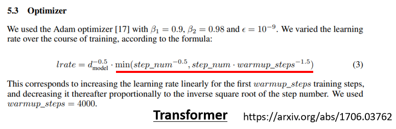
它这边有一个式子说，它的learning rate遵守这一个，神奇的function来设定，它的learning rate
这个东西你实际上，把这个function画出来，你实际上把equation画出来的话，就会发现它就是Warm Up，learning rate会先增加，然后接下来再递减
所以你发现说Warm Up这个技术，在很多知名的network里面都有，被当作一个黑科技，就论文里面不解释说，为什么要用这个，但就偷偷在一个小地方，你没有注意到的小地方告诉你说，这个network要用这种黑科技，才能够把它训练起来
那为什么需要warm Up呢，这个仍然是今天，一个可以研究的问题啦
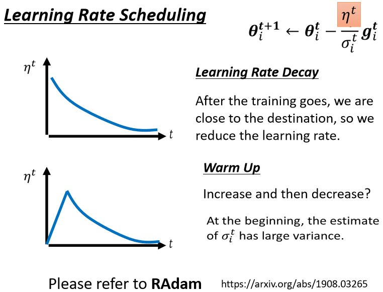
这边有一个可能的解释是说，你想想看当我们在用Adam RMS Prop，或Adagrad的时候，我们会需要计算σ，它是一个统计的结果，σ告诉我们，某一个方向它到底有多陡，或者是多平滑，那这个统计的结果，要看得够多笔数据以后，这个统计才精准，所以一开始我们的统计是不精准的
一开始我们的σ是不精准的，所以我们一开始不要让我们的参数，走离初始的地方太远，先让它在初始的地方呢，做一些像是探索这样，所以一开始learning rate比较小，是让它探索 收集一些有关error surface的情报，先收集有关σ的统计数据，等σ统计得比较精准以后，在让learning rate呢慢慢地爬升
所以这是一个解释，为什么我们需要warm up的可能性，那如果你想要学更多，有关warm up的东西的话，你其实可以看一篇paper，它是Adam的进阶版叫做RAdam，里面对warm up这件事情，有更多的理解
那有关optimization的部分，其实我们就讲到这边啦，
Summary of Optimization¶
所以我们从最原始的gradient descent，进化到这一个版本
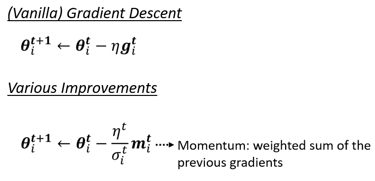
这个版本里面
-
我们有Momentum，也就是说我们现在，不是完全顺著gradient的方向，现在不是完全顺著这一个时间点，算出来的gradient的方向，来update参数，而是把过去，所有算出来gradient的方向，做一个加总当作update的方向，这个是momentum
-
接下来应该要update多大的步伐呢，我们要除掉，gradient的Root Mean Square
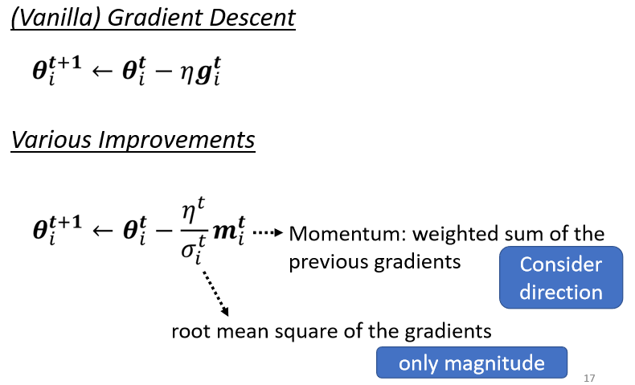
那讲到这边可能有同学会觉得很困惑，这一个momentum是考虑，过去所有的gradient，这个σ也是考虑过去所有的gradient，一个放在分子一个放在分母，都考虑过去所有的gradient，不就是正好抵消了吗，
但是其实这个Momentum跟这个σ，它们在使用过去所有gradient的方式是不一样的，Momentum是直接把所有的gradient通通都加起来，所以它有考虑方向，它有考虑gradient的正负号，它有考虑gradient是往左走还是往右走
但是这个Root Mean Square，它就不考虑gradient的方向了，它只考虑gradient的大小，记不记得我们在算σ的时候，我们都要取平方项，我们都要把gradient取一个平方项，我们是把平方的结果加起来，所以我们只考虑gradient的大小，不考虑它的方向，所以Momentum跟这个σ，算出来的结果并不会互相抵消掉
-
那最后我们还会加上，一个learning rate的scheduling，
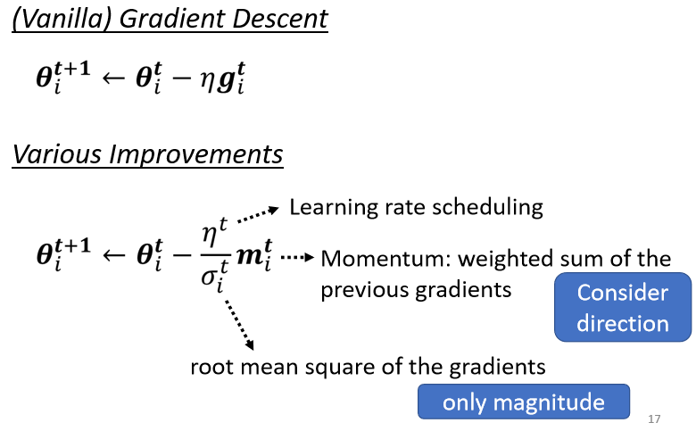
那这个是今天optimization的，完整的版本了，这种Optimizer，除了Adam以外，Adam可能是今天最常用的，但除了Adam以外，还有各式各样的变形，但其实各式各样的变形都不脱，就是要嘛不同的方法算M，要嘛不同的方法算σ，要嘛不同的，Learning Rate Scheduling的方式
那如果你想要知道更多，跟optimization有关的事情的话，那有之前助教的录影，给大家参考到这里，影片蛮长的大概两个小时，所以你可以想见说，有关Optimizer的东西，其实是还有蛮多东西可以讲的，所以时间的关系我们就不讲下去
到目前为止呢 我们讲的是什么，我们讲的是，当我们的error surface非常的崎岖，就像这个例子一样非常的崎岖的时候
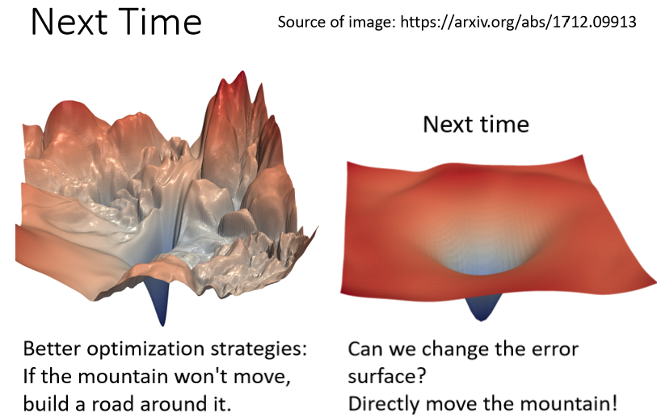
我们需要一些比较好的方法，来做optimization，前面有一座山挡著，我们希望可以绕过那座山，山不转路转的意思这样，你知道这个gradient，这奇怪的error surface，会让人觉得很痛苦
那就要用神罗天征，把这个炸平这样子，所以接下来我们会讲的技巧，就是有没有可能，直接把这个error surface移平，我们改Network里面的什么东西，改Network的架构activation function，或者是其它的东西，直接移平error surface，让它变得比较好train，也就是山挡在前面，就把山直接铲平的意思